Nomos Cathedral is a sci-fi cyberpunk environment made in Unreal Engine 4. The assets were made using 3DS Max and all materials were created in-engine without plugins or external tools.
The 'level' features two larger rooms, one smaller room and a street breaking the rooms up.
The workflow consisted of first 'grey boxing' out a level using BSP brushes. When the layout was complete I proceeded to create simple modular 3d assets in 3DS Max. These were then UV mapped onto a custom trim-texture normal map. In Unreal, these simple low-poly assets were scaled, rotated and reused continuously.
Nomos is an AI that acts as a megastate. It makes all decisions, designs all products and is revered as a god. The Cathedral acts as both a huge computer that hosts Nomos as well as a church were faithful citizens can go and ask things of their leader.
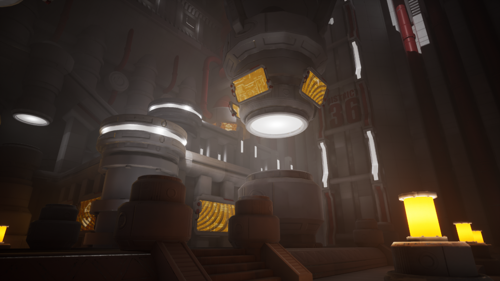
The Cathedral: View 1
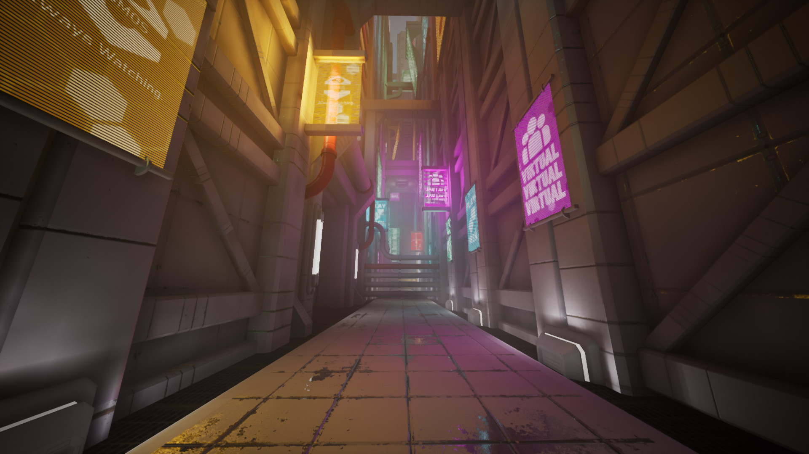
Street: View 1
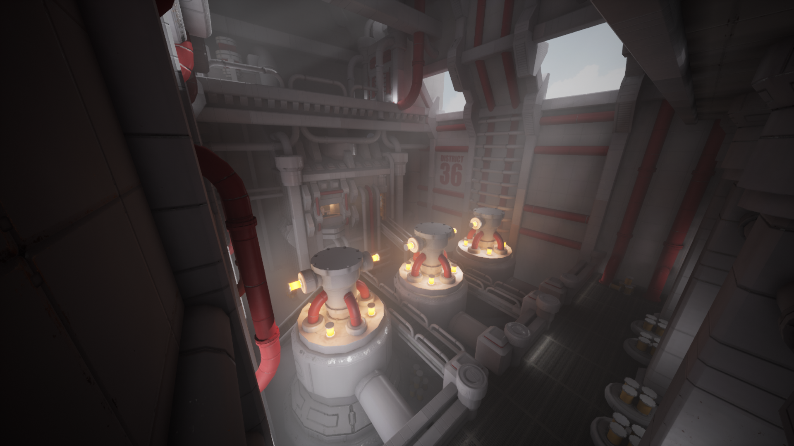
The Factory: View 1
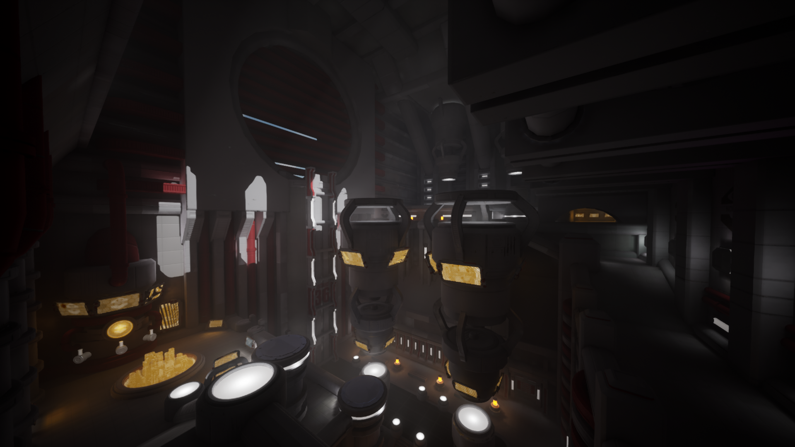
The Cathedral: View 2
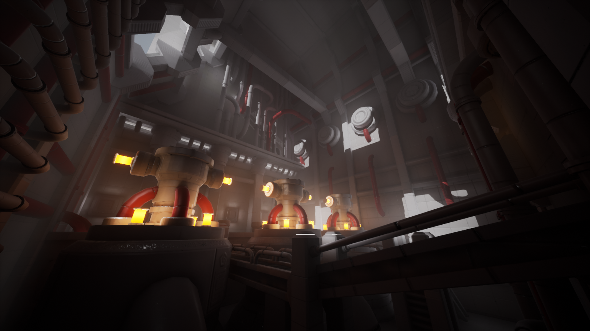
The Factory: View 2
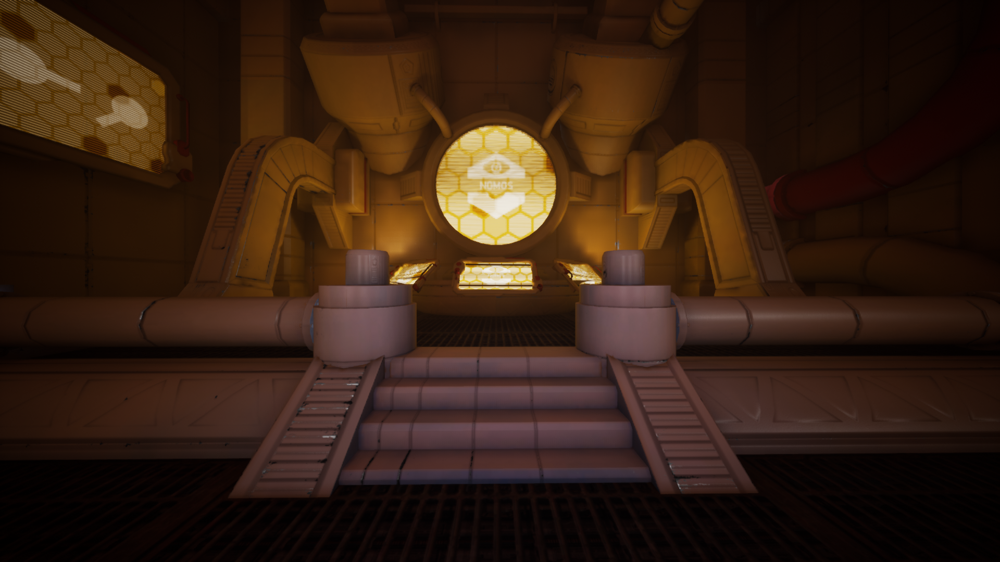
The Control Room
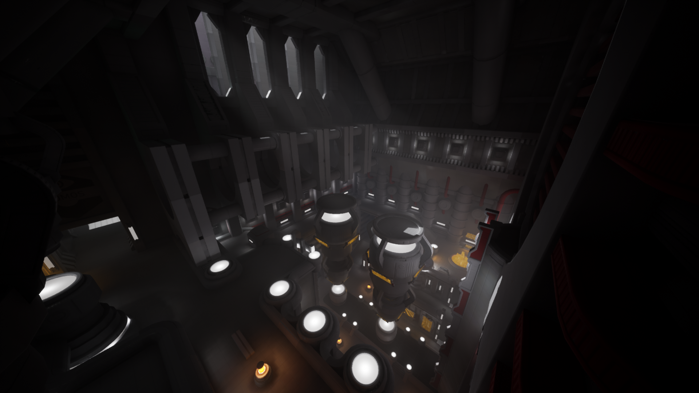
The Cathedral: View 3
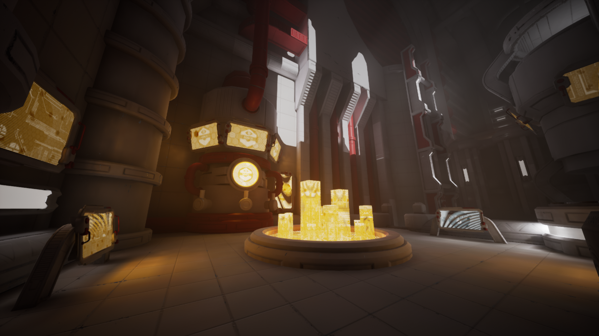
The Cathedral: View 4
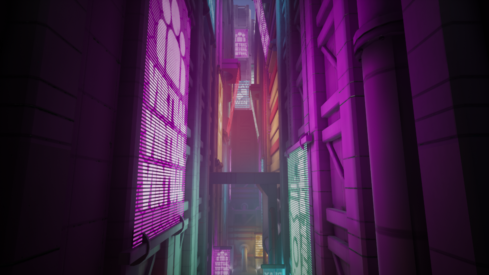
Street: View 2
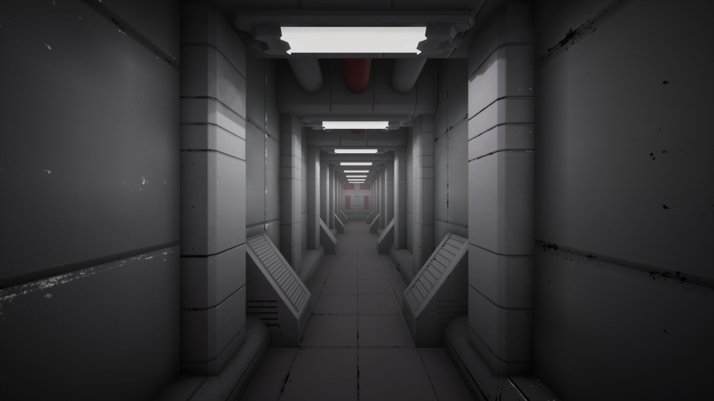
Corridor
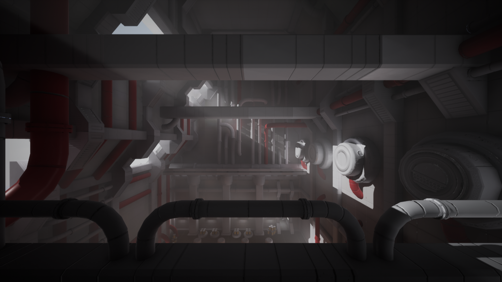
The Factory: View 3